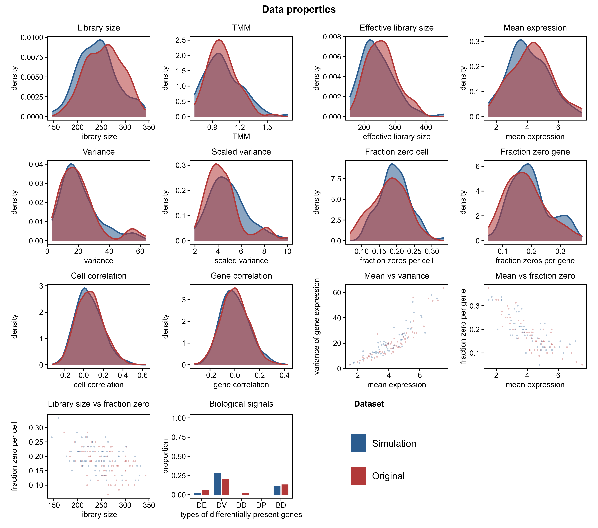
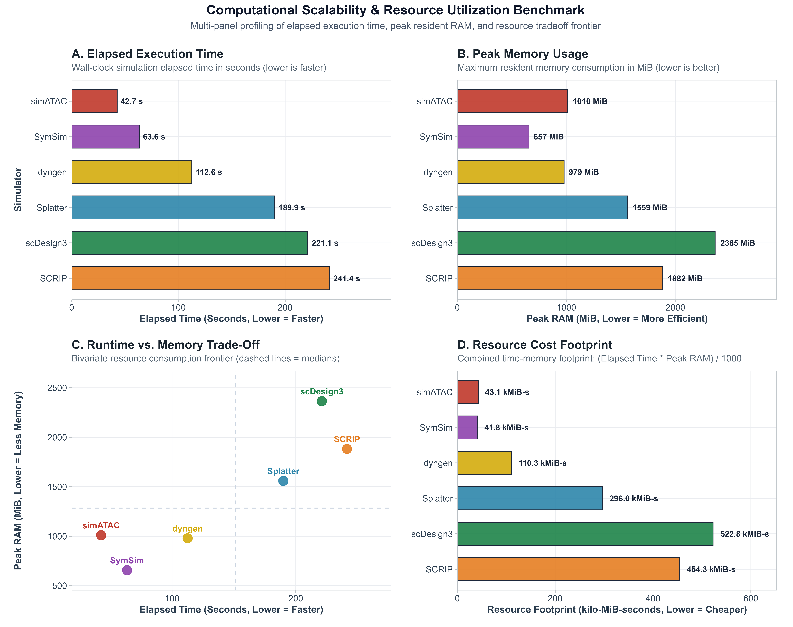
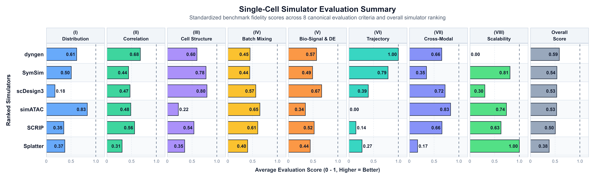
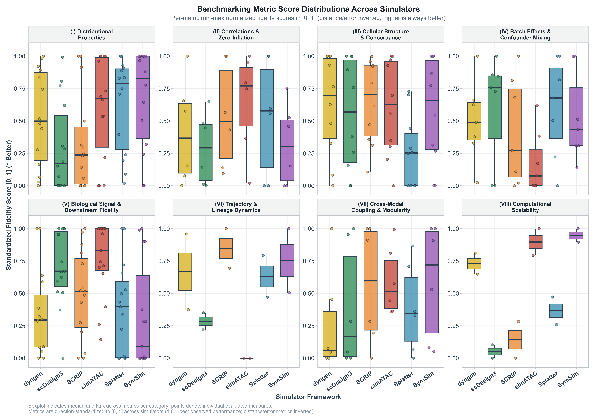
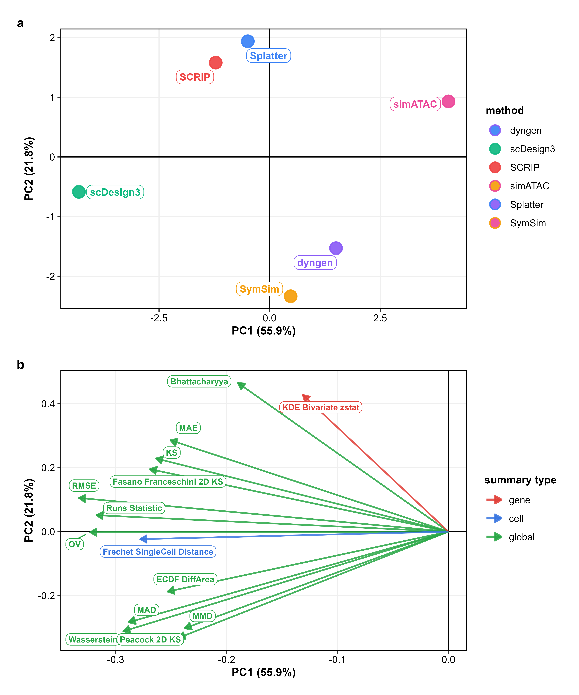

Getting Started with scSimEval: Unified Benchmarking for Single-Cell Multiomics Simulations
Kabilan S, Dr. Dwijesh Chandra Mishra, Dr. Shashi Bhushan Lal, Dr. Sudhir Srivastava, Dr. Krishna Kumar Chaturvedi, Dr. Sharanbasappa
2026-09-25
Source:vignettes/scSimEval-workflow.Rmd
scSimEval-workflow.Rmd1. Introduction
Computer simulations of single-cell technologies—specifically single-cell RNA sequencing (scRNA-seq), single-cell ATAC sequencing (scATAC-seq), and paired scRNA-seq + scATAC-seq multiomics—are widely used in bioinformatics research. They help scientists test computational pipelines, optimize analysis workflows, and evaluate statistical models. A critical question is always: how realistic is the simulated data compared to genuine biological experiments?
Many existing evaluation tools require artificial “ground truth” labels that are rarely known in real experiments, such as predefined true gene networks or synthetic marker lists.
scSimEval solves this problem by
providing 62 evaluation measures organized into 8
easy-to-understand categories. It works directly with the real
experimental data and simulated data you already have, without needing
any artificial ground truth:
-
Real experimental reference data
(
ref_rna,ref_atac) -
Simulated synthetic data (
sim_rna,sim_atac) -
Cell type annotations
(
cell_types) -
Batch or donor identifiers
(
batch_info) - Computer resources (Runtime in seconds and peak RAM in MiB)
- Developmental trajectories (automatically inferred directly from scRNA-seq counts without requiring external tools)
Data Modalities:
scSimEvalis primarily optimized for scRNA-seq, scATAC-seq, and paired scRNA-seq + scATAC-seq multiomics, and the evaluation framework can be readily extended to other single-cell data types.
2. Package Architecture and Workflow
The following workflow diagram shows the step-by-step benchmarking
process in scSimEval:

Figure 1: End-to-end benchmarking workflow of scSimEval. The framework takes real and simulated single-cell multiomics data, evaluates 62 metrics across 8 foundational categories, and produces standardized scores, comprehensive figures, and ranking leaderboards.
The evaluation process follows four simple steps:
Step 1: Input Real and Simulated Data
Provide your real experimental reference and simulated count matrices
(ref_rna, sim_rna, ref_atac,
sim_atac), along with cell type labels
(cell_types), batch labels (batch_info), and
computer resource records (runtime in seconds and peak RAM in MiB).
Step 2: Calculate Evaluation Measures
scSimEval calculates 62 evaluation measures across 8
core categories without needing any artificial ground truth.
Step 3: Run the Complete Benchmark
Execute the complete evaluation in a single command using
evaluate_simulation_accuracy(),
evaluate_multiomics_accuracy(), or
evaluate_multiple_datasets().
3. Score Normalization and Visual Mapping Workflow
In single-cell benchmarking, different metrics have completely different units and directions. For example, runtime is in seconds, peak memory is in megabytes, statistical distances are near zero, and clustering accuracy ranges between -1 and 1. Furthermore, for some metrics, smaller values are better (such as distance, error, and runtime), whereas for others, larger values are better (such as correlation and accuracy).
To make fair and intuitive comparisons, scSimEval uses
an automated two-step score normalization pipeline,
followed by clear visual mapping:

Figure 2: Score normalization and visual mapping workflow in scSimEval. Box 1 shows the two-step normalization process: direction inversion for lower-is-better metrics followed by min-max scaling to a standard 0 to 1 range. Box 2 illustrates the visual mapping into bubble matrices, where bubble size reflects simulation quality and top performers are highlighted with bold squares.
3.1 Two-Step Score Normalization
Step 1: Direction Inversion (Aligning Direction) For all metrics where smaller values mean better simulation results (such as Kolmogorov-Smirnov distance, Wasserstein distance, root mean square error, and runtime), scores are inverted: After inversion, larger numbers consistently represent better simulation fidelity across every metric.
Step 2: Min-Max Scaling ( to ) All values are rescaled to a standard range from (worst performer) to (best performer):
3.2 Visual Mapping to Bubble Matrices
- Bubble Size: Directly represents the standardized score ( to ). Larger bubbles indicate higher simulation quality and closer match to real biology.
- Top-Performer Highlighting: Outstanding scores () are shown as bold squares, while standard scores are shown as filled circles.
- Category Color Themes: Each metric category has its own distinct color (for example, blue for distributions, green for marker genes, and orange for computer speed).
- Missing Feature Dots: Features or modalities not supported by a simulator appear as neutral, small grey dots.
- Overall Leaderboard Ranking: Simulators are arranged vertically from top to bottom by their composite average score across all criteria.
4. Installation and Getting Started
To install and load scSimEval directly
from GitHub:
# Install devtools if needed
if (!requireNamespace("devtools", quietly = TRUE)) install.packages("devtools")
# Install scSimEval from GitHub
devtools::install_github("kabilanbio/scSimEval")
# Load the package
library(scSimEval)scSimEval includes built-in example datasets so you can
test all functions immediately: *
example_scrna: Paired real and simulated
scRNA-seq matrices
()
with cell type labels and batches. *
example_scatac: Paired real and simulated
scATAC-seq chromatin accessibility matrices
().
* example_multiomics: A paired bundle
containing both RNA and ATAC modalities, cell labels, and computer
resource logs.
# Load example datasets
data(example_scrna)
data(example_scatac)
data(example_multiomics)
# Check dimensions
cat("Real scRNA-seq dimensions:", dim(example_scrna$ref), "\n")
#> Real scRNA-seq dimensions: 60 80
cat("Simulated scRNA-seq dimensions:", dim(example_scrna$sim), "\n")
#> Simulated scRNA-seq dimensions: 60 80
cat("Cell types present:", levels(example_scrna$cell_types), "\n")
#> Cell types present: TypeA TypeB5. Evaluating Data Properties and Distributions
The function evaluate_simulation_accuracy() evaluates 1D
and 2D statistical distributions and zero-count patterns between real
and simulated matrices:
# Evaluate unimodal accuracy on scRNA-seq
unimodal_res <- evaluate_simulation_accuracy(
ref_data = example_scrna$ref,
sim_data = example_scrna$sim,
compute_bivariate = FALSE,
verbose = FALSE
)
# Preview library size distribution metrics
lib_summary <- subset(unimodal_res$metrics_summary_table, Property == "library_size")
knitr::kable(head(lib_summary, 8), digits = 4, caption = "Library Size Statistical Distance Measures")| Category | Property | Metric | Value |
|---|---|---|---|
| Distributional Properties | library_size | MAD | 15.0000 |
| Distributional Properties | library_size | KS | 0.2125 |
| Distributional Properties | library_size | MAE | 15.0625 |
| Distributional Properties | library_size | RMSE | 15.7150 |
| Distributional Properties | library_size | OV | 0.8269 |
| Distributional Properties | library_size | Bhattacharyya | 0.0001 |
| Distributional Properties | library_size | Wasserstein | 15.0625 |
| Distributional Properties | library_size | ECDF_DiffArea | 0.0766 |
5.1 Comparative Distribution QC Plot
(plot_distribution_qc)
To visually inspect whether simulated counts match real biological
distributions, plot_distribution_qc() generates a clean
14-panel layout comparing properties such as library size, mean
expression, gene variance, zero proportions, and cell-cell
correlations:

Figure 3: 14-panel comparative distribution QC layout. Compares real biological data (warm brick red) and simulated data (steel blue) across single-cell properties, bivariate relationships, and biological signal retention.
# Generate the 14-panel comparative QC plot
plot_distribution_qc(
ref_data = example_scrna$ref,
sim_data = example_scrna$sim,
title = "Data Properties Quality Control",
ref_name = "Real Data",
sim_name = "Simulated Data",
cell_types = example_scrna$cell_types
)6. Evaluating Cell Clustering and Group Structure
To test whether simulated data preserve distinct cell populations and
cluster boundaries without requiring external truth,
evaluate_clustering_metrics() calculates cluster separation
and concordance:
clust_res <- evaluate_clustering_metrics(
data = example_scrna$sim,
cell_types = example_scrna$cell_types,
ref_data = example_scrna$ref
)
cat("Average Silhouette Width:", round(clust_res$silhouette, 4), "\n")
#> Average Silhouette Width: 0.0278
cat("Davies-Bouldin Index:", round(clust_res$davies_bouldin, 4), "\n")
#> Davies-Bouldin Index: NA
cat("Adjusted Rand Index (ARI):", round(clust_res$ARI, 4), "\n")
#> Adjusted Rand Index (ARI): 0.1316
cat("Normalized Mutual Information (NMI):", round(clust_res$NMI, 4), "\n")
#> Normalized Mutual Information (NMI): 0.14147. Evaluating Batch Effects and Technical Confounders
When evaluating multi-batch or multi-donor simulations,
evaluate_batch_metrics() checks whether technical batch
differences are properly represented without overshadowing biological
variation:
batch_res <- evaluate_batch_metrics(
data = example_scrna$sim,
batch_info = example_scrna$batch_info,
cell_types = example_scrna$cell_types,
verbose = FALSE
)
cat("Batch Shannon Entropy:", round(batch_res$shannon_entropy, 4), "\n")
#> Batch Shannon Entropy: 0.9796
cat("PC Regression R2 (PCR):", round(batch_res$pcr_r2, 4), "\n")
#> PC Regression R2 (PCR): 0.0121
cat("Cross-Batch Transfer Accuracy:", round(batch_res$cross_batch_accuracy, 4), "\n")
#> Cross-Batch Transfer Accuracy: 0.61258. Evaluating Cell Lineages and Developmental Trajectories
Instead of requiring external pseudotime labels,
scSimEval automatically infers differentiation paths
directly from scRNA-seq expression counts and compares the real and
simulated trajectories:
# Automatically infer trajectories and evaluate fidelity
traj_res <- evaluate_trajectory_metrics(
ref_data = example_scrna$ref,
sim_data = example_scrna$sim,
cell_types_ref = example_scrna$cell_types,
cell_types_sim = example_scrna$cell_types
)
cat("Pseudotime Spearman Correlation:", round(traj_res$pseudotime_correlation, 4), "\n")
#> Pseudotime Spearman Correlation: 1
cat("Lineage Tree Branch Height RMSE:", round(as.numeric(traj_res$tree_height_rmse), 4), "\n")
#> Lineage Tree Branch Height RMSE: 1.86729. Evaluating Biological Signals and Marker Genes (DEGs)
Simulated datasets must preserve the marker genes and expression
fold-changes found in genuine biological experiments.
scSimEval integrates 15 differentially expressed gene (DEG)
fidelity measures from three major benchmarking frameworks: *
Simpipe (Duo et al., 2024): True DEG ratio,
-value
uniformity on non-DEGs, and cell-identity classification accuracy and
score. * SimBench (Cao et al., 2021): Symmetric error
on DEG proportions, fold-change Pearson and Spearman correlations, and
top-DEG Jaccard overlap. * Shaky Foundations (Crowell et al.,
2023): Group silhouette width, group separation discrepancy,
and percent variance explained (PVE).
# Evaluate marker gene and biological signal retention
deg_res <- evaluate_deg_fidelity(
ref_data = example_scrna$ref,
sim_data = example_scrna$sim,
ref_celltypes = example_scrna$cell_types,
sim_celltypes = example_scrna$cell_types,
fdr_cutoff = 0.05,
logfc_cutoff = 0.5,
top_n_de = 50
)
# View the first 10 metrics
knitr::kable(head(deg_res$deg_summary_table, 10), digits = 4)10. Evaluating Computational Resource Usage (Scalability)
Simulating thousands or millions of single cells requires fast and
memory-efficient software. plot_scalability_benchmark()
generates a comprehensive 6-panel dashboard comparing runtime, memory
usage, Pareto tradeoff frontiers, multithreading speedup, and cell
throughput:

Figure 4: Computational scalability benchmark suite. 6-panel dashboard comparing execution runtime, peak RAM, runtime-memory tradeoff, CPU efficiency, cost footprint, and throughput across simulation methods.
# Generate the 6-panel computational scalability dashboard
plot_scalability_benchmark(
scalability_data = sim_comparison_list,
mode = "composite",
panels = "6panel"
)11. Master Evaluation Pipeline:
evaluate_multiomics_accuracy
The flagship function evaluate_multiomics_accuracy()
runs all evaluation categories in one command and returns a tidy summary
table:
master_eval <- evaluate_multiomics_accuracy(
ref_multi = example_multiomics$ref_multi,
sim_multi = example_multiomics$sim_multi,
cell_types = example_multiomics$cell_types,
batch_info = example_multiomics$batch_info,
cpu_time = example_multiomics$resource_stats$cpu_time,
memory_mb = example_multiomics$resource_stats$memory_mb,
system_time = example_multiomics$resource_stats$system_time,
elapsed_time = example_multiomics$resource_stats$elapsed_time,
verbose = FALSE
)
summary_df <- master_eval$benchmark_summary_table
cat("Total evaluated metric instances:", nrow(summary_df), "\n")
#> Total evaluated metric instances: 358
table(summary_df$Category)
#>
#> Biological Signal & Downstream Cellular Structure & Mixing
#> 10 33
#> Computational Scalability Cross-Modal Relationships
#> 2 17
#> Distributional Properties Trajectory Dynamics
#> 294 212. Visualization Suite
scSimEval provides built-in plotting functions rendering
high-resolution figures (supporting 600 DPI for publication and
reporting needs).
12.1 Multi-Dimensional Benchmarking Bubble Matrix
(plot_benchmark_bubble_matrix)
The flagship visualization
plot_benchmark_bubble_matrix() summarizes
multi-simulator performance across the 8 evaluation categories. Bubble
sizes indicate normalized simulation fidelity (larger bubbles = better
performance):

Figure 5: Flagship multi-dimensional benchmarking bubble matrix. Ranks simulation methods top-to-bottom across the 8 evaluation categories. Bubble size reflects standardized fidelity score ( to ), and top performers are highlighted with bold squares.
# Generate benchmark bubble matrix
plot_benchmark_bubble_matrix(
data = sim_comparison_list,
bubble_size_range = c(2, 7.5),
title = "Benchmarking Single-Cell Simulation Methods",
subtitle = "Comparative performance across 8 evaluation categories"
)12.2 Evaluation Summary Horizontal Bar Matrix
(plot_evaluation_summary)
To present an executive overview of overall simulation accuracy,
plot_evaluation_summary() ranks candidate simulators from
best to worst and displays average scores across categories:

Figure 6: Executive evaluation summary horizontal bar matrix. Ranks simulators across the 8 categories and displays overall composite performance with exact score annotations.
# Generate horizontal summary bar chart
plot_evaluation_summary(
data = sim_comparison_list,
title = "Single-Cell Simulator Evaluation Summary",
subtitle = "Standardized benchmark scores across categories and overall ranking"
)12.3 Metric Score Distributions Across Categories
(plot_metric_boxplots)
To inspect variability across individual metrics and simulators,
plot_metric_boxplots() displays boxplots with jittered data
points across all 8 categories:

Figure 7: Metric score distributions across the 8 categories. Displays standardized scores (, higher is better) with individual data points and boxplots across candidate simulators.
# Generate 8-category standardized boxplots
plot_metric_boxplots(
benchmark_data = sim_list,
score_type = "normalized",
ncol = 4
)12.4 Comprehensive Benchmark Heatmap
(plot_metric_heatmap)
To examine exact numeric values for every metric without any loss of
detail, plot_metric_heatmap() displays all simulators on
the horizontal axis and all 62 measures on the vertical axis, printing
exact raw values inside each cell:

Figure 8: Complete benchmark metric heatmap. Displays exact unnormalized raw scores in bold text inside every cell, grouped cleanly across the 8 evaluation categories.
# Render full benchmark heatmap with exact numbers
plot_metric_heatmap(
benchmark_data = sim_comparison_list,
scale_fill = "relative",
facet_by_category = TRUE
)12.5 Dimension Reduction and Ordination Plots (PCA & MDS)
To discover which simulation methods behave similarly across all
metrics, scSimEval includes Principal Component Analysis
(plot_metric_pca) and Multidimensional Scaling
(plot_metric_mds):

Figure 9: Principal Component Analysis (PCA) ordination of simulation methods. Projects simulators based on their metric profiles, showing global affinities and key discriminating metric vectors.
# Run PCA biplot across benchmark metric profiles
plot_metric_pca(
benchmark_data = sim_comparison_list,
top_n_loadings = 8
)
# Run classical MDS ordination
plot_metric_mds(
benchmark_data = sim_comparison_list,
point_size = 4.5
)13. Multi-Dataset and Multi-Method Benchmarking
When conducting large-scale benchmarking studies across multiple
patient samples, tissues, or experimental cohorts,
evaluate_multiple_datasets() processes all datasets
simultaneously:
# Set up a collection of datasets
dataset_collection <- list(
"Method 1-scRNA-seq" = list(ref = example_scrna$ref, sim = example_scrna$sim),
"Method 1-scATAC-seq" = list(ref = example_scatac$ref, sim = example_scatac$sim),
"Method 2-scRNA-seq" = list(ref = example_scrna$ref, sim = example_scrna$sim),
"Method 2-scATAC-seq" = list(ref = example_scatac$ref, sim = example_scatac$sim)
)
# Run consolidated benchmarking in one step
consolidated_results <- evaluate_multiple_datasets(
datasets = dataset_collection,
pair_by_prefix = TRUE,
compute_bivariate = FALSE,
verbose = FALSE
)
# Preview consolidated results overview
knitr::kable(consolidated_results$dataset_overview, digits = 4, caption = "Consolidated Benchmark Overview")| Dataset | Data_Name | Modality | Total_Metrics | Mean_KS_Distance | Mean_Wasserstein | Mean_RMSE |
|---|---|---|---|---|---|---|
| Method 1 | Method 1-scRNA-seq | scRNA-seq | 153 | 0.1616 | 2.3207 | 2.4504 |
| Method 1 | Method 1-scATAC-seq | scATAC-seq | 155 | 0.1488 | 1.2090 | 1.4124 |
| Method 1 | Method 1-Joint | Joint (Cross-Modal) | 10 | 0.3167 | 0.0635 | 0.0663 |
| Method 2 | Method 2-scRNA-seq | scRNA-seq | 153 | 0.1616 | 2.3207 | 2.4504 |
| Method 2 | Method 2-scATAC-seq | scATAC-seq | 155 | 0.1488 | 1.2090 | 1.4124 |
| Method 2 | Method 2-Joint | Joint (Cross-Modal) | 10 | 0.3167 | 0.0635 | 0.0663 |
14. Interactive Web Application (Shiny Studio)
For researchers who prefer an interactive graphical interface rather
than writing R code, scSimEval includes an embedded Shiny
web application. You can explore benchmark results, filter metrics, view
bubble plots, and export high-resolution (600 DPI) figures directly in
your web browser:
# Launch the interactive web app in your default browser
launch_scSimEval_app()15. Extension to Other Single-Cell Data Types
While scSimEval is primarily optimized and demonstrated
for scRNA-seq, scATAC-seq, and
paired scRNA-seq + scATAC-seq multiomics, all 62
evaluation measures operate on standard numeric count or continuous
matrices.
Consequently, the package can be readily extended to benchmark simulations across other single-cell data modalities, including: * CITE-seq / REAP-seq: Passing RNA expression counts as Modality 1 and antibody-derived tag (ADT) surface protein counts as Modality 2. * Single-Cell DNA Methylation: Passing cell-level methylation levels or -values as numeric input matrices. * Spatial Omics: Passing spatial gene expression counts alongside complementary spatial coordinates or morphological features.
16. Summary
scSimEval provides a unified, objective, and
ground-truth-free evaluation toolkit for benchmarking single-cell and
multiomics simulation methods. With 62 metrics organized into 8 clear
categories, automated score normalization, and intuitive visualizations,
it enables researchers to select and validate simulation methods with
confidence.
17. Authors and Maintainers
scSimEval is developed and maintained by:
Kabilan S (Ph.D Student and Maintainer, ICAR-IASRI) —
kabilan151414@gmail.comDr. Dwijesh Chandra Mishra (Author & Thesis Guide, ICAR-IASRI) —
dwij.mishra@gmail.comDr. Shashi Bhushan Lal (Author, ICAR-IASRI) —
sblall16@gmail.comDr. Sudhir Srivastava (Author, ICAR-IASRI) —
sudhir0401bm@gmail.comDr. Krishna Kumar Chaturvedi (Author, ICAR-IASRI) —
kkcchaturvedi@gmail.comDr. Sharanbasappa (Contributor, ICAR-IASRI) —
smadival509@gmail.comGitHub Repository: https://github.com/kabilanbio/scSimEval
Bug Reports & Issues: https://github.com/kabilanbio/scSimEval/issues
18. Session Information
sessionInfo()
#> R version 4.6.1 (2026-06-24 ucrt)
#> Platform: x86_64-w64-mingw32/x64
#> Running under: Windows 11 x64 (build 26200)
#>
#> Matrix products: default
#> LAPACK version 3.12.1
#>
#> locale:
#> [1] LC_COLLATE=English_India.utf8 LC_CTYPE=English_India.utf8
#> [3] LC_MONETARY=English_India.utf8 LC_NUMERIC=C
#> [5] LC_TIME=English_India.utf8
#>
#> time zone: Asia/Calcutta
#> tzcode source: internal
#>
#> attached base packages:
#> [1] stats graphics grDevices utils datasets methods base
#>
#> other attached packages:
#> [1] scSimEval_0.6.0
#>
#> loaded via a namespace (and not attached):
#> [1] Matrix_1.7-6 limma_3.68.4 jsonlite_2.0.0
#> [4] compiler_4.6.1 Rcpp_1.1.2 parallel_4.6.1
#> [7] cluster_2.1.8.3 jquerylib_0.1.4 splines_4.6.1
#> [10] systemfonts_1.3.2 textshaping_1.0.5 BiocParallel_1.47.0
#> [13] yaml_2.3.12 fastmap_1.2.0 statmod_1.5.2
#> [16] lattice_0.22-9 R6_2.6.1 generics_0.1.4
#> [19] igraph_2.3.3 knitr_1.51 BiocGenerics_0.58.1
#> [22] htmlwidgets_1.6.4 bluster_1.22.0 desc_1.4.3
#> [25] bslib_0.12.0 BiocNeighbors_2.6.0 rlang_1.3.0
#> [28] cachem_1.1.0 RANN_2.6.2 xfun_0.60
#> [31] fs_2.1.0 sass_0.4.10 otel_0.2.0
#> [34] cli_3.6.6 magrittr_2.0.5 pkgdown_2.2.1
#> [37] class_7.3-24 digest_0.6.39 grid_4.6.1
#> [40] locfit_1.5-9.12 edgeR_4.10.1 mclust_6.1.3
#> [43] clue_0.3-68 lifecycle_1.0.5 S4Vectors_0.50.1
#> [46] evaluate_1.0.5 codetools_0.2-20 ragg_1.5.2
#> [49] stats4_4.6.1 rmarkdown_2.31 pkgconfig_2.0.3
#> [52] tools_4.6.1 htmltools_0.5.9